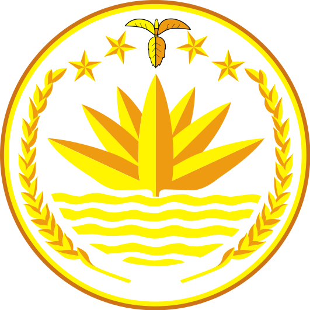
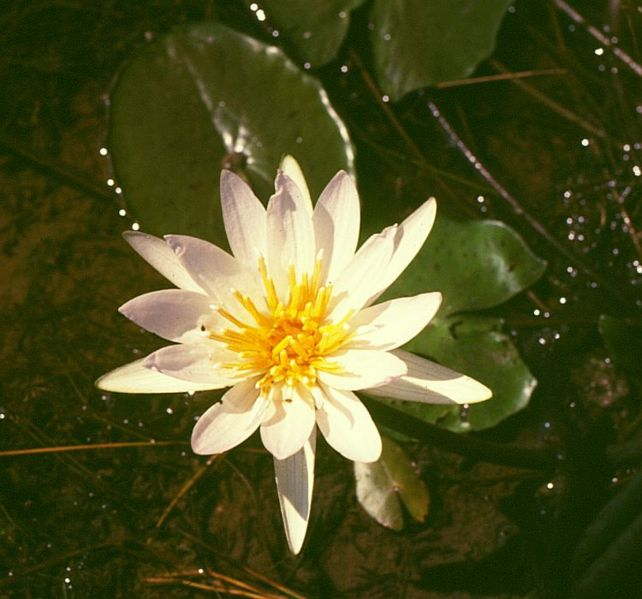
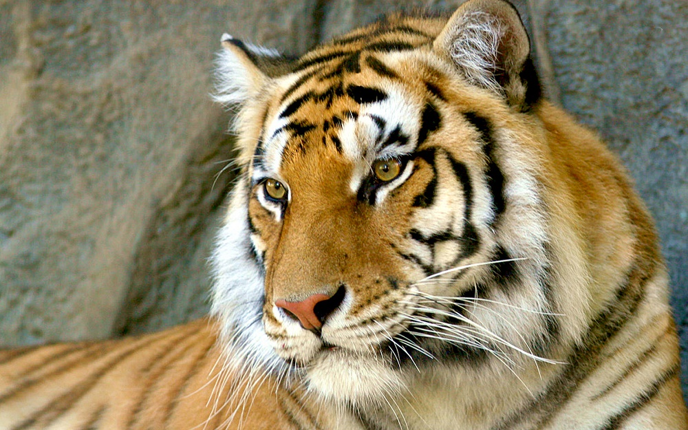
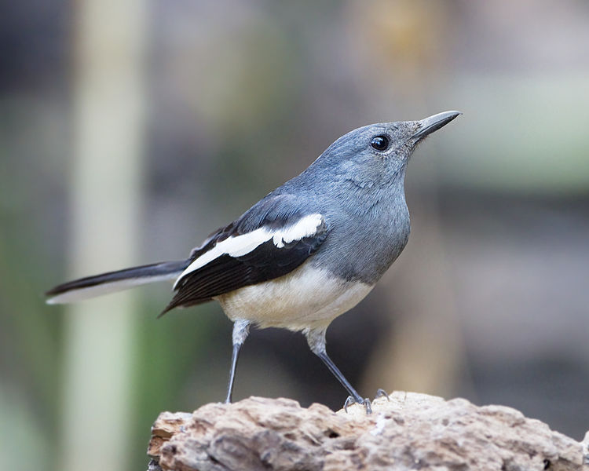

With a red circle-which represents the rising sun and the bloody sacrifices of countless Bangladeshi
people for their freedom-on a bottle green background which symbolizes our wonderful natural resources,
the national flag of Bangladesh stands as high as our pride and love for our motherland.
The sanctity and the dignity of the National Flag is protected and officially preserved by an act of
Bangladesh Flag rules, 1972. As per the rules, the national flag is rectangular in size with the length to
width ratio of 10:6. Prescribed sizes of the flag for buildings are 305cm X 183cm, 152cm X 91cm and 76cm X
46cm and for vehicles are 38cm X 23cm and 25cm X 15cm. It was designed by famous artist Kamrul Hasan.

National Emblem
The National Emblem of the People's Republic of Bangladesh. The national flower Shapla (water lily) is
surrounded by two sheaves of rice. Above the water lilly are four stars and a three jute leaves. The national
emblem of Bangladesh was adopted shortly after independence in 1971. Located on the emblem is a water lily,
that is bordered on two sides by rice sheaves. Above the water lilly are four stars and a three connected jute
leaves. The water lily is the country’s national flower, and is representative of the many rivers that run
through Bangladesh. Rice represents its presence as the staple food of Bangladesh, and for the agriculture of
that nation. The four stars represent the four founding principles in the current constitution of Bangladesh of
1972: nationalism, secularism, socialism, and democracy.
Government Seal
The Government Seal of Bangladesh used by the Ministries of Bangladesh and the Government of Bangladesh on
official documents. One version is used on the cover page of Bangladeshi passports. The Seal features the same
design elements as the first Flag of Bangladesh in a circular setting. The outer white ring is shown with the
caption of the official name of the Government of the People’s Republic of Bangladesh in Bengali with 4 red 5-pointed
stars. In centre the country map on a red disc..

National Flower
The Shapla (Nymphaea nouchali) is the national flower of Bangladesh. Nymphaea nouchali is considered a medicinal
plant in Indian Ayurvedic medicine under the name Ambal; it was mainly used to treat indigestion. Recent experiments
have confirmed that it has medicinal qualities as an antihepatotoxic and antidiabetic. Like all waterlilies or lotuses,
its tubers and rhizomes can be used as food items; they are eaten usually boiled or roasted. In the case of N. nouchali,
its tender leaves and flower peduncles are also valued as food.
National Fruit
The Jackfruit (Artocarpus heterophyllus) is the national fruit of Bangladesh. It is native to parts of South and
Southeast Asia and widely cultivated in tropical regions of Bangladesh. The jackfruit tree is well suited to tropical
lowlands, and its fruit is the largest tree-borne fruit, reaching as much as 80 pounds (36 kg) in weight, 36 inches (90 cm)
in length, and 20 inches (50 cm) in diameter.

National Animal
The Royal Bengal Tiger (Panthera tigris tigris) is the national animal of Bangladesh. The tiger replaces the lion as King
of the Beasts in cultures of eastern Asia representing royalty, fearlessness and wrath. Members of the East Bengal Regiment
of the Bangladesh Army are nicked ‘Bengal Tigers’; the regiment’s logo is a tiger face and The Bangladesh Cricket Board's logo
features a Royal Bengal Tiger. Bangladesh teems with icons and symbols, not the least of which is the ubiquitous Royal Bengal
Tiger. This majestic beast finds its home in Bangladesh, in the still pristine mangrove forests of the Sundarbans.
National Fish
The Ilish or Hilsha, also spelled Elish (Tenualosa ilisha), is national fish of Bangladesh. The Ilish is a popular fish to
eat among the people of South Asia.

National Bird
The Magpie Robin (Copsychus saularis) is the national Bird of Bangladesh, where it is common and known as the Doyel or Doel.
They are common birds in urban gardens as well as forests. They are particularly well known for their songs. It is a widely used
symbol in Bangladesh, appearing on currency notes, and a landmark in the city of Dhaka is named as the Doyel Chatwar
(meaning: Doyel Square).